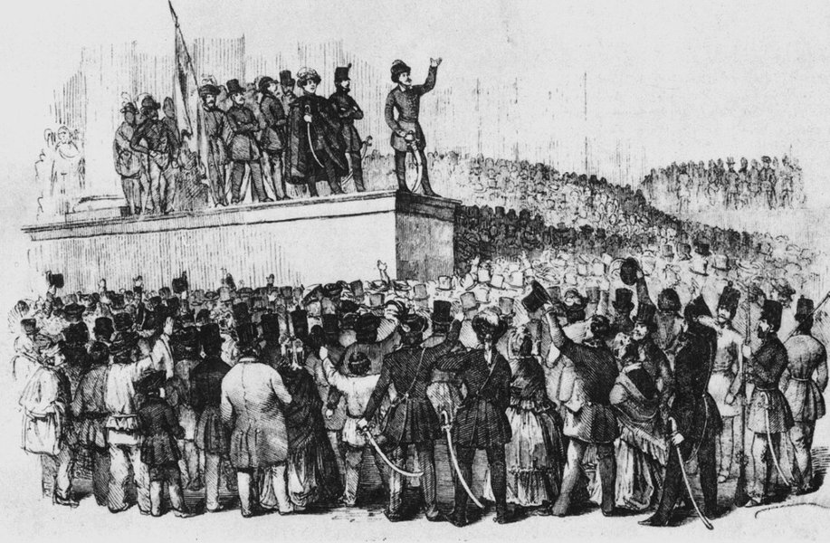
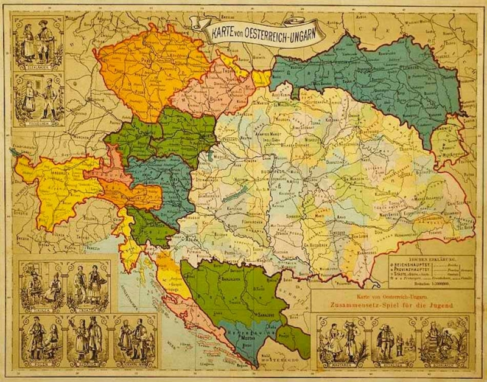

Austrougarska nagodba

Bachov Absolutizam 1852.-1860.
Početci 20. stoljeća i Bosanska kriza 1900.-1913.

Smrt Franza Ferdinanda i početak 1. svijetskog rata

Tijek rata 1914.-1918.
Kraj monarhije i stvaranje Republike SHS

Klikni na događaj
Odaberi događaj s lijeve strane za detaljan opis.